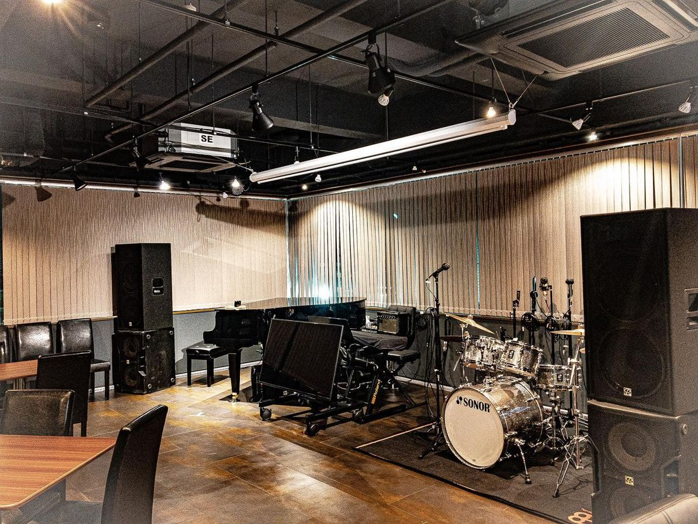
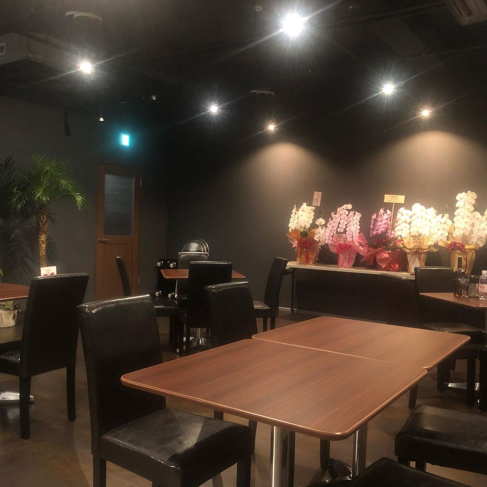

History
店舗について
沿革
- 2021.04令和3年4月
日向坂スタジオ合同会社 設立
スチール撮影のみならず、映像配信、音楽スタジオ、飲食サービス等に対応したエンターテインメント運営会社として活動開始。

- 2021.10令和3年10月4日
「52番街」オープン
西武新宿線 久米川駅前に、完全予約制・会員制レストランバー「52番街」をオープン。

History
スチール撮影のみならず、映像配信、音楽スタジオ、飲食サービス等に対応したエンターテインメント運営会社として活動開始。

西武新宿線 久米川駅前に、完全予約制・会員制レストランバー「52番街」をオープン。
